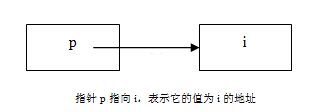
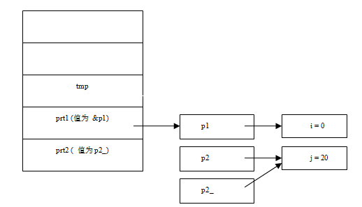
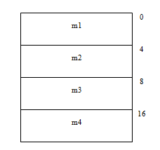
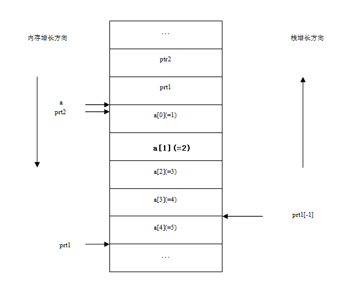
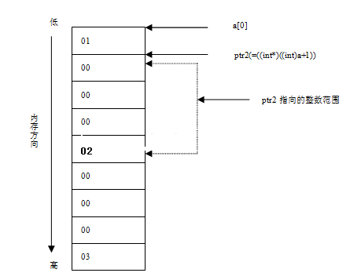
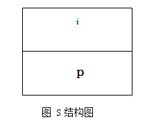
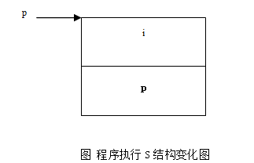
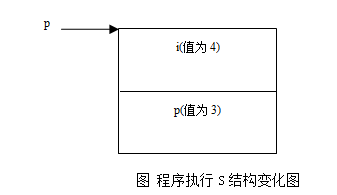
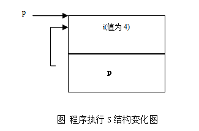
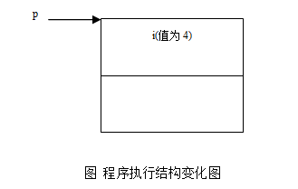

指针是C语言中的精华。指针其实就是一个变量，和其他类型的变量一样。在32位机器上，它是一个占用四字节的变量（64位上占八个字节），它与其他变量的不同就在于它的值是一个内存地址，指向内存的另外一个地方。
指针根据其所指向的数据的类型可以分为：
1）内建型别的指针，指向的是C语言中的一些内建型别
char *pch; int *pi; float *pf; double *pd;
2）结构体指针
typedef struct _node
{
int data;
struct _node *next;
}node,*pnode;
node * n;
3)函数指针
typedef void (*FUNC)(int); FUNC fn;
图1-1和下面的代码示范了指针的概念和它的基本使用方法：
int main(void)
{
int i = 1;
int *p = &i; // 指针p指向了i的地址
*p += 1; // *p将i的值增1
printf(“i = %d\n”, i);
return 0;
}

C语言中最复杂最容易出错的要数指针了。指针让一些初级程序员望而却步，而一些新的开发语言（如Java，C#）干脆就放弃了指针。
大家已经知道，C语言最适合于底层的开发，一个重要的原因就是因为它支持指针，能够直接访问内存和操作底层的数据，可以通过指针直接动态分配与释放内存：
//下面是用typedef定义一个新结构最常用的定义形式
//在微软的面试中，在考查你某个算法前，一般会让你先定义一个与算法相关的结构。
//比如链表排序的时候，让你定义一个链表的结构。
typedef struct _node
{
int value;
struct _node * next;
}node, *link;
node *pnode = NULL; // 声明变量都应该初始化，尤其是指针
pnode = (node *)malloc(sizeof (node)); // 内存分配
// 务必检测内存分配失败情况，程序健壮性的考查
// 加上这样的判断语句，会让你留给面试官一个良好的印象
// 不加这样的判断，如果分配失败，会造成程序访问NULL指针崩溃
if (pnode == NULL)
{
//出错处理，返回资源不足错误信息
}
memset(pnode, 0, sizeof(node)); //新分配的内存应该初始化，否则内存中含有无用垃圾信息
pnode->value = 100;
printf(“pnode->value = %d\n”, pnode->value);
node * ptmp = pnode;
ptmp += 1; // 指针支持加减运算，但须格外小心
free(pnode); // 使用完内存后，务必释放掉，否则会泄漏。一般采取谁分配谁释放原则
pnode = NULL; // 释放内存后，需要将指针置NULL，防止野指针
上面的这段代码演示了指针的基本使用方式。在指针声明的时候，最好将其初始化为NULL，否则指针将随机指向某个区域，访问没有初始化的指针，行为为未定义而为程序带来预想不到的结果；指针释放之后，也应该将指针指向NULL，以防止野指针。因为指针所指向的内存虽然释放了，但是指针依然指向某一内存区域。
指针的运算最容易出错。指针支持加减运算。上面代码中ptmp += 1运算结束之后，指针指向的区域不是向前移动了一个字节，而是向前移动了sizeof (node)个字节，也就是说“1”代表了指针指向的数据结构（node）大小个字节。如果要让指针向前移动一个字节，那么需要先对指针进行类型转换：(char *)ptmp + 1。
也就是说，对于指针p，指针的加法运算p = p + n中，p向前移动的位置不是n个字节，而是n * sizeof(*p)个字节，指针的减法运算与此类似。
现在为了让大家对指针有深刻的理解和牢固的掌握，重点研究一些与指针相关的典型问题。这些问题频繁出现在各大知名IT企业的笔试或者技术面试中。当然，这也是学习C语言必须掌握的问题。
1) int *a[10]; 2) int (*a)[10]; 3) int (*a)(int); 4) int (*a[10])(int); 5) int *a, **a; 6) char str[]; 7) char *str, **str;
此题经常被用来做为笔试题。笔者毕业当年参加SYNOPSIS的面试时便遇到了此题。它综合了指针变量的各种声明形式。下面我们给出各个指针表示的含义：
1）int *a[10]; //指针数组 2）int (*a)[10]; //数组指针 3）int (*a)(int); //函数指针 4）int (*a[10])(int); //函数指针数组。注意：*与[]的优先级来判断这组的区别 5）int *a, **a; //整型指针和指向整型指针的指针（二级指针） 6）char str[]; //字符数组 7）char *str, **str; //字符指针和指向字符指针的指针（二级指针）
要掌握这些复杂形式的指针意义并不容易，因为容易混淆。那么有没有特别的要领呢？其实此题的关键是要明白[]，*，和()运算符的优先级：() > [] > *。比如int *a[10]，由于[]的运算级别高于*，所以该表达式首先是一个数组。那么它是什么数组呢？由int *确定它是个指针数组。又比如int(*a)[]，由于() 高于[]，所以它是一个指针。那么它是什么指针呢？由[]确定它是个数组指针，即指向数组的指针。
char *p1 = “Hello, word!”
char p2[] = “Hello, world”
char p3[] = {‘h’, ‘e’, ‘l’,’l’,’o’,’,’, ‘ ‘, ‘w’,’o’,’r’,’l’,’d’}
此题考查的是计算指针与数组的长度。其中，指针的长度（在32位机器系统上）为4，字符串数组的长度必须包含字符串的结束标志符’\0’，数组的长度为元素个数乘以单个元素大小。因此，该题的答案为：
char *p1 = “Hello, word!”
p1为字符串指针，所以sizeof (p1) = 4。
char p2[] = “Hello, world”
p2为字符数组并初始化为”Hello, world”。由于字符串的存储特点，总是以’\0’做为结束标志，因此上面的字符串等价于下面的数组：
char p2[] = {‘h’, ‘e’, ‘l’,’l’,’o’, ‘ ‘, ‘w’,’o’,’r’,’l’,’d’,’\0’}
必须包含字符串的结束标志符’\0’，所以sizeof (p2) = 13。
char p3[] = {‘h’, ‘e’, ‘l’,’l’,’o’, ‘ ‘, ‘w’,’o’,’r’,’l’,’d’}
p3为字符数组，并由12个字符初始化，所以sizeof (p3) = 12。
注意，strlen(p)计算的是字符串中有效的字符数（不含’\0’）。所以strlen（p）的值为12。考察下面拷贝字符串的代码，看看有什么问题没呢？
char *str = “Hello, how are you!”;
char *strbak = (char *)malloc(strlen(str));
if (NULL == strbak)
{
//处理内存分配失败，返回错误
}
strcpy(strbak, str);
......
显然，由于strlen()计算的不是str的实际长度（即不包含’\0’字符的计算），所以strbak没有结束符’\0’，而在C语言中，’\0’是字符串的结束标志，所以是必须加上的，否则会造成字符串的溢出。所以上面的代码应该是：
char *str = “Hello, how are you!”;
char *strbak = (char *)malloc(strlen(str)+1);
if (NULL == strbak)
{
//内存分配失败，返回错误
}
strcpy(strbak, str);
既然在这里谈到了sizeof，现在我们就把sizeof运算在下面做一个系统的总结：
1）参数为数据类型或者为一般变量。
例如sizeof(int)，sizeof(double)等等。这种情况要注意的是不同系统或者不同编译器得到的结果可能是不同的。例如int类型在16位系统中占2个字节，在32位系统中占4个字节。
2）参数为数组或指针。下面举例说明：
int a[50]; //sizeof(a)=4*50=200; 数组所占的空间大小为200字节。
注意数组做函数参数时，在函数体内计算该数组参数则等同于计算指针的长度。
int *a=new int[50];// sizeof(a)=4; a为一个指针，sizeof(a)是求指针的大小，在32位系统
//中，当然是占4个字节。
3）参数为结构或类。
sizeof应用在类和结构的处理情况是相同的。有两点需要注意，第一、结构或者类中的静态成员不对结构或者类的大小产生影响，因为静态变量的存储位置与结构或者类的实例地址无关。第二、没有成员变量的结构或类的大小为1，因为必须保证结构或类的每一个实例在内存中都有唯一的地址。关于更多的结构的sizeof大小计算，请参考1.4节数据对齐。
1）const int *a; 2）int const *a; 3）int * const a;
此题考查的是包含const关键字声明指针的含义。现分析如下：
1）const int *a; //指针常量，指针指向的变量不能改变值 2）int const *a; //指针常量，与const int *a等价 3）int * const a; //常量指针，指针本身不能改变值
Bjarne博士在他的《The C++ Programming Language》里面给出过一个区别的方法：把一个声明从右向左读。例如：
char *const cp; ( 我们把“*” 读成 “pointer to” ) cp is a const pointer to char //int* const指向常量的指针 const char * p; p is a pointer to const char; //const int*常指针 char const * p;
同上因为C里面没有const *的运算符，所以const只能属于前面的类型。
在计算数组长度的时候，我们需要注意数组作为函数的参数，将退化为指针，所以，其长度大小为指针的长度。现在我们来看下面这段代码：
int a[10]; //sizeof (a) = 10*sizeof (int) = 40；
int a[10];
void func(int a[], int n)
{
printf(“%d”, sizeof (a)); //此时数组退化为指针，所以 sizeof (a) = 4
}
需要指出的是，数组也是一个指针，但它是常量指针，即int a[10]中的a可以看做是int * const a，所以一旦声明，a不能再被改变。
下面来看以下代码中的两个sizeof用法有问题吗？
void UpperCase( char str[] ) // 将 str 中的小写字母转换成大写字母
{
for( size_t i=0; i<sizeof(str)/sizeof(str[0]); ++i )
if( 'a'<=str[i] && str[i]<='z' )
str[i] -= ('a'-'A' );
}
char str[] = "aBcDe";
cout << "str字符长度为: " << sizeof(str)/sizeof(str[0]) << endl;
UpperCase( str );
cout << str << endl;
分析：函数内的sizeof有问题。根据语法，sizeof如用于数组，只能测出静态数组的大小，无法检测动态分配的或外部数组大小。函数外的str是一个静态定义的数组，因此其大小为6，函数内的str实际只是一个指向字符串的指针，没有任何额外的与数组相关的信息，因此sizeof作用于上只将其当指针看，一个指针为4个字节，因此返回4。
#include <stdio.h>
int main(void)
{
int a[5][10];
printf("%d,%d,%d\n", a, a+1, &a+1);
return 0;
}
其输出结果为：1310392,1310432,1310592。试分析原因。
解答：a和&a都是数组a[5][10]的首地址。那么它们有什么不同呢？实际上，它们代表的类型不同。
a是int a[10]的类型，而&a则是a[5][10]的类型。
大家知道，指针运算中的“1”代表的是指针类型的长度。
所以a+1和&a+1中的1代表的长度分别为a的类型a[10]即sizeof (int) * 10 和&a的类型a[5][10]即sizeof (int)*10*5。
所以a 的首地址为1310392，那么a + 1和&a + 1的地址为：
a + 1 = 1310392 + sizeof (int) * 10 = 1310392 + 4 * 10 = 1310432
&a + 1 = 1310392 + sizeof (int) * 10 * 5 = 1310392 + 4 * 10 * 5 = 1310592
更抽象点的说，如果定义一个数组int a[M1][M2][…][Mn]，那么a + 1 = a首地址+M2*M3*…*Mn *sizeof (int)；而&a + 1 = a首地址 + M1*M2*…*Mn*sizeof (int)。
int i = 0, j = 20, *p1 = &i, *p2 = &j, *p2_ = &j;
void f(int **ptr1, int *ptr2)
{
1. int *tmp = ptr2;
2. **ptr1 *= 10;
3. *ptr2 *= 10;
4. ptr2 = *ptr1;
5. *ptr1 = tmp;
}
请问调用f(&p1, p2_)之后i, j, p1, p2的值各是什么？
分析与解答：
首先我们画出程序执行过程中调用f()函数时堆栈的情况如图1-2所示：
第1句int *tmp = ptr2;即tmp = &j，tmp指针指向了变量j。
第2句：**ptr1 即*（*ptr1）即*p1 即 i。**ptr1 *= 10 即为i *= 10 即为0;所以i 的值为0。
第3句*ptr2 *= 10 即为*p2_ *= 10即为j *= 10即为 200;所以j的值为200。
第4句ptr2 = *ptr1则为p2_ = *ptr1即为p2_ = p1;
第5句*ptr1 = tmp则为p1 = tmp = &j
因此答案为：
i = 0 j = 200 p1 = &j p2 = &j
可以通过下面的程序来验证一下：
#include <stdio.h>
void f(int **ptr1, int *ptr2)
{
int *tmp = ptr2;
**ptr1 *= 10;
*ptr2 *= 10;
ptr2 = *ptr1;
*ptr1 = tmp;
}
void main(void)
{
int i = 0, j = 20, *p1 = &i, *p2 = &j;
f(&p1, p2);
printf("i = %d, j = %d, &i = %x, &j = %x, p1 = %x, p2 = %x\n",
i, j, &i, &j, p1, p2);
}
仔细检查上面的函数的输出，看它是否与计算结果一致。实践是检验真理的唯一标准。写一个实验程序去验证推理，是程序员的一个好习惯。
此题考查的是指针和宏的灵活应用。首先我们给出宏的定义如下：
#define OFFSET(TYPE, MEMBER) (size_t) (&(((TYPE*)0)->MEMBER))
(size_t)(&(((TYPE*)0)->MEMBER))把0地址转化为TYPE结构的指针，然后获取该结构中MEMBER成员的指针，并将其强制转换为size_t类型。于是，如图1-3所示，由于结构从0地址开始定义，因此，这样求出的member成员地址，实际上就是它在结构中的偏移量。实际上，在Linux的内核中就是用这样的宏定义来求成员的偏移量的（详见include/linux/stddef.h）。
下面的C代码在VC++6.0和低位优先的平台下的运行结果是什么？请详细说明原因。
#include <stdio.h>
int main(void)
{
int a[5] = {1,2,3,4,5};
int *ptr1 = (int *)(&a+1);
int *ptr2 = (int *)((int )a+1);
printf("%x,%x",ptr1[-1],*ptr2);
return 0;
}
分析：由第5题分析，大家知道，&a和a都表示数组的首地址，但是它们代表的类型不同。其中&a代表整个数组，而a代表数组的第一个元素，即&a+1中1代表的大小是整个数组，而a+1 中1的大小代表的是一个元素的大小。
前面已经提到，指针加减法运算，后面的数字表示指针指向的数据类型的大小的倍数。比如&a+1，其中的1就表示指针向前移动1*sizeof(&a)那么多的字节。而&a表示整个数组，所以ptr1 = (int *)(&a+1)，ptr1指到了数组的末尾位置（见图1-4）。因为ptr1[-1]即为*((int*)ptr1-1)，即指针ptr1向低地址移动sizeof(int)个字节，即向后移动4个字节，正好指到a[4]的位置，所以ptr1[-1]为5。对于语句*ptr2 =(int *)((int)a+1)，在这里，我们已经将指针a强制转换成了整型，a+1不是指针运算了。（int *)((int)a+1)指向了首地址的下一个字节。我们把数组的存储结构按照1字节为单位画一下(注意所在的平台为低位优先，所以低位字节存储在低地址），现在内存数据的情况如图1-5所示：
所以，*ptr2所代表的整数（四个字节，且低位优先），我们从图1-6中就可以看出是：2000000
struct S
{
int i;
int *p;
};
void main(void)
{
S s;
int *p = &s.i;
p[0] = 4;
p[1] = 3;
s.p = p;
s.p[1] = 1;
s.p[0] = 2;
}
问：程序会在哪一行死掉？
此题是微软公司曾经的一道笔试题。考查了朋友们对指针的灵活掌握。现在来分析此题。首先，画出如图1-6所示的S的结构：
程序在执行过程中：
int * p = &s.i; // 如图1-7，p指向i
p[0] = 4; // 如图1-8， p[0]=s.i，所以s.i=4
p[1] = 3; // p[1]=s.p，所以s.p为3
s.p = p; // 如图1-9，s.p指向了p，而p是指向s.i的，即s.p指向了s.i
/*
* s.p[1]即为p[1]（因为s.p为p，运算符”.”与”[]”同级，结合率为从左向右，
* 所以s.p[1]等同于(s.p)[1])，而p[1]为s.p成员，所以如图1-10，s.p=1；此时s.p不指向s.i了，而是指向了1
*/
s.p[1] = 1;
/*
* s.p[0]即为*(s.p + 0)=2，即*(s.p)=2，即*(1)=2；由于内存中0到64k的地址范围都是
* NULL地址空间，所以为*NULL=2，这是非法赋值，所以出错。
*/
s.p[0] = 2; //非法赋值，出错
注意：程序中有两个p。一个是S结构中的成员，一个是局部变量。二者不可混淆。
引用是一种没有指针语法的指针，与指针一样，引用提供对对象的间接访问。引用为所指对象的一个别名（alisas）。如下面的例子：
int i＝0；
int &refi＝i； // refi指向一个i的引用
引用必须初始化，而指针没有这个要求（尽管没有初始化的指针很危险）；引用总是指向它最初获得的那个对象，而指针可以被重新赋值。
C++中向函数中传递指针和传递指针的引用的区别：
如果是传递指针，那么会先复制该指针，在函数内部使用的是复制后的指针，这个指针与原来的指针指向相同的地址，如果在函数内部将复制后的指针指向了另外的新的对象，那么不会影响原有的指针。所以要想在函数中改变指针，必须传递指针的指针或者指针的引用。
使用对象指针作为函数参数要经使用对象作函数参数更普遍一些。因为使用对象指针作函数参数有如下两点好处：
1）实现传址调用。可在被调用函数中改变调用函数的参数对象的值，实现函数之间的信息传递。
2）使用对象指针实参仅将对象的地址值传给形参，而不进行副本的拷贝，这样可以提高运行效率，减少时空开销。
使用对象引用作函数参数要比使用对象指针作函数更普遍，这是因为使用对象引用作函数参数具有用对象指针作函数参数的优点，而用对象引用作函数参数将更简单，更直接。
在C语言中经常使用指针，指针的指针，指针的引用做函数的参数。那么它们的区别是什么呢？
1）指针引用做参数：
void func（ MyClass *&pBuildingElement ）； //指针的引用，能修改指针
2）指针做参数：
void func（ MyClass *pBuildingElement ）；//指针，不能修改指针
3）指针的指针做参数：
void func（ MyClass **pBuildingElement ）；//指针的指针，能修改指针
下面是3个实际函数调用的例子：
void func1（MyClass *pMyClass）
{
DoSomething（pMyClass）；
pMyClass = // 其他对象的指针
}
MyClass *p = NULL；
func1（p）；//指针做参数，p不能被改变其值
void func2（MyClass **pMyClass）；
{
*pMyClass = new MyClass；
……
}
MyClass *p = NULL；
func2（&p）；//指针的指针做参数，p的值可以被改变
void func3（MyClass *&pMyClass）；
{
pMyClass = new MyClass；
……
}
MyClass *p = NULL；
func3（p）；//指针的引用做参数，p的值可以改变
下面是一个Microsoft开发库中CObList的两个成员函数：
1. Cobject *&GetAt（POSITION position）；
2. Cobject *GetAt（POSITION position）const；
这里有两个GetAt()函数，功能都是获取给定位置的元素。它们的区别何在呢？区别在于第一个是返回对象指针的引用，第二个返回对象的指针。因此第一个可以修改函数返回的对象，而第二个则不行。所以如果写成下面这样：
Cobject *pObj = myList.GetAt（pos）；
则pObj返回的是列表中某个对象的指针，如果接着改变pObj的值：
pObj = pSomeOtherObj；
这并改变不了在位置pos处的对象地址，而仅仅是改变了变量pObj。但是，如果写成下面这样：
Cobject *&rpObj = myList.GetAt（pos）；
现在，rpObj是返回的引用列表中的对象的指针，所以当改变rpObj时，也会改变列表中位置pos处的对象地址，也就是说替代了列表中的这个对象。这就是为什么CObList会有两个GetAt函数的缘故。一个可以修改指针的值，另一个则不能。
事实上，函数可以返回任何类型的引用，不仅仅是指针的引用。比如下面的调用：
int& abc(int &x)；
函数中&是什么作用？实际上它的作用就是对变量的引用。
下面举个实际例子：
int x = 0;
int &a(int &i) // 传入实参的引用
{
i = - 1;
return x ; // 返回x的引用
}
void main(void)
{
int j=10;
a(j)=100;
// 这时候j = -1，x = 100了，因为函数a()返回了x的引用，可以修改x的值
}
总之，返回引用就是返回一个变量的地址里面的内容，就是真正地返回这个变量本身，它可以用作左值，以改变返回的引用的变量的值。在上面的代码中，函数传入的是实参的引用，返回的是x的引用。因此在main()函数调用了a()函数之后，j和x的值都会发生改变。返回一个类型的引用，在操作符重载赋值运算符“=”中，这种方式是经常用到的。
分析完指针的一些典型问题之后，现在将使用指针的一些需要注意的问题总结如下：
1）指针在声明的时候最好初始化。
指针变量没有被初始化，任何指针变量刚被创建时不会自动成为NULL指针，它的缺省值是随机的，它会随机的指向任何一个地址（即野指针），访问野指针会造成不可预知的后果。所以，指针变量在创建的同时应当被初始化，要么将指针设置为NULL，要么让它指向合法的内存。
2）指针的加减运算移动的是指针所指类型大小。
前面已经提到，指针的加法运算p = p + n中，p向前移动的位置不是n个字节，而是n * sizeof(*p)个字节，指针的减法运算与此类似。
3）当用malloc或new为指针分配内存时应该判断内存分配是否成功，并对新分配的内存进行初始化。
用malloc或new分配内存，应该判断内存是否分配成功。如果失败，会返回NULL，那么就要防止使用NULL指针。在分配成功时，会返回内存的地址。这个时候内存是一段未被初始化的空间，里面存在的可能是垃圾数据。因此，需要用memset等对该段内存进行初始化。
此外，应该防止试图使用指针作为参数，去分配一块动态内存。如果非要这么做，那么请传递指针的指针或指针的引用。
4）如果指针指向的是一块动态分配的内存，那么指针在使用完后需要释放内存，做到谁分配谁释放的原则，防止内存泄漏。
5）指针在指向的动态内存释放后应该重新置为NULL，防止野指针。
野指针不是NULL指针，是指向“垃圾”内存的指针。野指针是很危险的，它可能会造成不该访问的数据或不该改的数据被访问或者篡改。在应用free或者delete释放了指针指向的内存之后，应该将指针重新初始化为NULL。这样可以防止野指针。
分析下面的程序：
void GetMemory(char **p,int num)
{
*p=(char *)malloc(num);
}
int main(void)
{
char *str=NULL;
GetMemory(&str,100);
strcpy(str,"hello");
free(str);
if(str!=NULL)
{
strcpy(str,"world");
}
printf("\n str is %s",str);
getchar();
}
分析：上面的代码经常出现在各大外企的笔试题目里，它通过指针的指针分配了一段内存，然后将”hello”拷贝到该内存。使用完后再释放掉。到此为止，代码没有任何问题。但是，在释放之后，程序又试图去使用str指针。那么这里就存在问题了。由于str没有被重新置为NULL，它的值依然指向了该内存。因此后面的程序依然能够打印出”world” 字符串。
6）指针操作不要超出变量的作用范围，防止野指针。
分析下面的代码：
char *func()
{
char c = ‘A’;
char *p = &c;
return p;
}
void main(void)
{
char * pc = NULL;
p = func();
printf(“%c”, *p);
}
在上面的代码中，func()函数试图返回一个指向局部变量c的指针。然而局部变量的生命期为func()函数执行期，即变量c分配在栈上，func()函数执行完后，c就不存在了。返回的指针就是一个无效的野指针。因此，打印*p时，可能会出现任何一个不可确定的字符。
7) 对于复杂指针的使用，如果做不到“谁分配，谁释放”，那么可以使用引用计数来管理这块内存的使用。 引用计数方式来管理内存，即在类中增加一个引用计数，跟踪指针的使用情况。当计数为0了，就可以释放指针了。 此种方法适合于通过一个指针申请内存之后，会经过程序各种复杂引用的情况。
下面是一个实际例子：
<
p>class CXData
{
public:
CXData()
{
m_dwRefNum = 1; // 引用计数赋初值
}
ULONG AddRef() // 增加引用
{
ULONG num = InterlockedIncrement(&m_dwRefNum);
return num;
}
ULONG Release() // 减少引用
{
ULONG num = InterlockedDecrement(&m_dwRefNum);
if(num == 0) // 当计数为0了，就释放内存
{
delete this;
}
return num;
}
private: ULONG m_dwRefNum; // 引用计数
}
使用实例：
CXData *pXdata = new CXData;
pXdata->AddRef(); // 使用前增加计数
pXdata->Release(); // 使用后减少计数，如果计数为零，则释放内存
本页共550段，15564个字符，28348 Byte(字节)